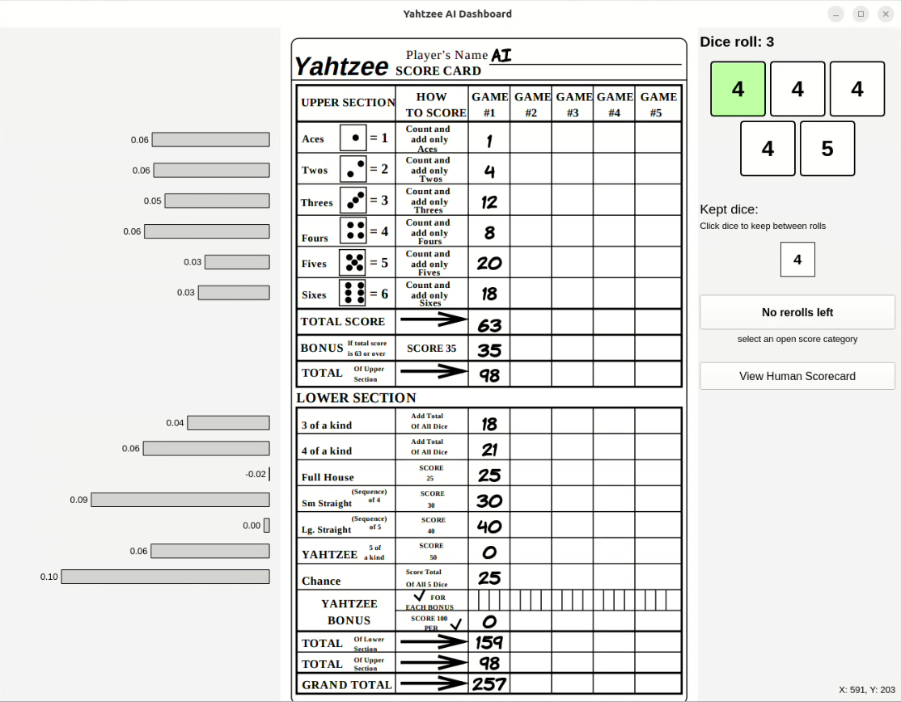
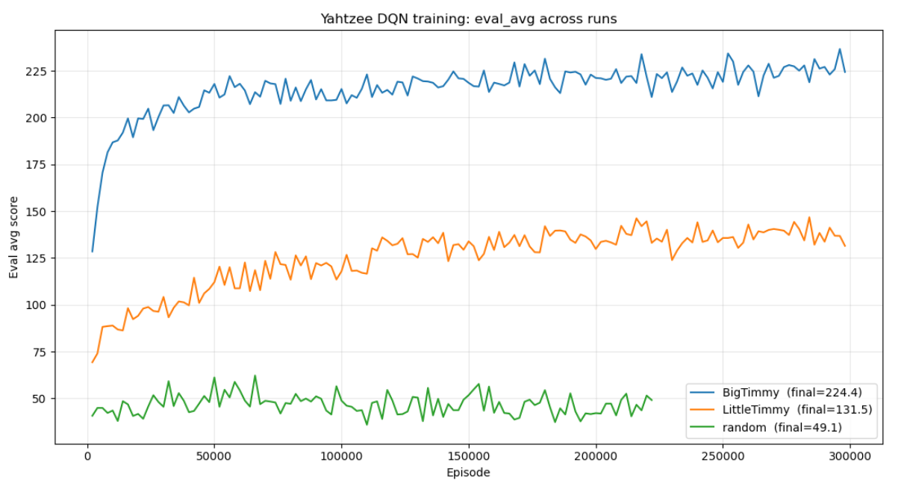
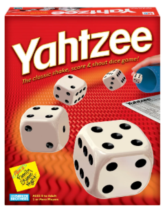

Autonomous AI gameplay powered by Deep Q-Networks, ROS 2, UR3e Robotics, and YOLOv8 Vision.
This project integrates a Deep Q-Network (DQN) with a UR3e robotic manipulator and YOLOv8-based vision to play Yahtzee autonomously against a human opponent. The AI agent acts as the primary decision-maker, evaluating the game via a 24-dimensional state representation and choosing from 45 possible actions.
Our system uses a strictly sparse reward strategy—it receives mathematical feedback only at the very end of a 13-turn game (scoring out of 100 points). This forces the agent to learn holistic, forward-looking strategies (like sacrificing a turn to earn the 35-point Upper Bonus) rather than making greedy, short-term optimizations.
Watch the Embodied DQN agent in action as it manages the game, rolls the dice, and physically interacts with the environment using the UR3e robotic manipulator.
The system is built on a "Brain-in-a-Vat" architecture to allow decoupled simulation training before real-world deployment. The three primary subsystems are:
Acting as the game's strict referee, this engine enforces the 13-turn Yahtzee rules and builds a 24-dimensional state vector (encoding dice faces, roll states, and scorecard status). It also provides a logical mask for the AI to ensure only legal actions are chosen.
The AI's action space consists of 45 discrete indices representing two types of choices: Indices 0–31 (Hold Combinations) and Indices 32–44 (Score Categories). The DQN always outputs 45 predictions per step.
To prevent the agent from attempting illegal moves, an Action Masking Filter is applied to the raw outputs:
When the system selects the action with the maximum resulting value (argmax), illegal moves are physically impossible to execute. For example, during Roll 3, all "Hold/Reroll" actions are heavily penalized, forcing the network to select the most optimal "Score Category" action.
A Deep Q-Network uses a Multi-Layer Perceptron (24 → 128 → 128 → 64 → 45) to evaluate the game environment. The 45 discrete actions represent 32 hold combinations and 13 score categories. By utilizing Prioritized Experience Replay (PER), the AI successfully learns from sparse rewards to target average game scores of 210+.
Serving as a visual proxy for the AI's internal thought process, the PyQt6 dashboard synchronizes digital game states with a visual user interface, displaying telemetry, the YOLOv8 feed, and a Q-Value "Confidence Chart."
In the real world, a YOLOv8 network detects dice values and performs exact-count sanity checks. The UR3e handles physical manipulation using a "Clear-Table" strategy—safely removing held dice from view before automatically sweeping and re-rolling the rest.
The real-time interface observing the game state, bounding box overlays, and real-time neural network action values.

This graph highlights the agent's convergence toward the 210+ average point threshold through rigorous simulated episodes before physical deployment.

A graphical representation of the classic Yahtzee game.
